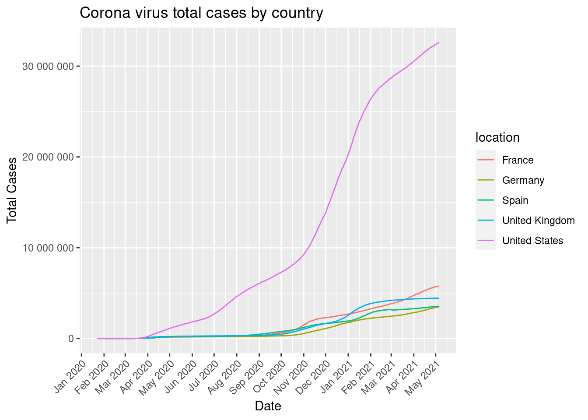

library(ggplot2)
library(tidyverse)
library(lubridate)
library(dplyr)
library(magrittr)
library(ggplot2)
covid_data_tbl <- read_csv("https://covid.ourworldindata.org/data/owid-covid-data.csv")
# 2. Data manipluation
covid_cases_tbl <- covid_data_tbl %>%
filter(location %in% c("Germany",
"United Kingdom",
"France",
"Spain",
"Spain",
"United States"))
covid_cases_tbl## # A tibble: 2,329 x 59
## iso_code continent location date total_cases new_cases new_cases_smoot…
## <chr> <chr> <chr> <date> <dbl> <dbl> <dbl>
## 1 FRA Europe France 2020-01-24 2 2 NA
## 2 FRA Europe France 2020-01-25 3 1 NA
## 3 FRA Europe France 2020-01-26 3 0 NA
## 4 FRA Europe France 2020-01-27 3 0 NA
## 5 FRA Europe France 2020-01-28 4 1 NA
## 6 FRA Europe France 2020-01-29 5 1 0.714
## 7 FRA Europe France 2020-01-30 5 0 0.714
## 8 FRA Europe France 2020-01-31 5 0 0.429
## 9 FRA Europe France 2020-02-01 6 1 0.429
## 10 FRA Europe France 2020-02-02 6 0 0.429
## # … with 2,319 more rows, and 52 more variables: total_deaths <dbl>,
## # new_deaths <dbl>, new_deaths_smoothed <dbl>, total_cases_per_million <dbl>,
## # new_cases_per_million <dbl>, new_cases_smoothed_per_million <dbl>,
## # total_deaths_per_million <dbl>, new_deaths_per_million <dbl>,
## # new_deaths_smoothed_per_million <dbl>, reproduction_rate <dbl>,
## # icu_patients <lgl>, icu_patients_per_million <lgl>, hosp_patients <lgl>,
## # hosp_patients_per_million <lgl>, weekly_icu_admissions <lgl>,
## # weekly_icu_admissions_per_million <lgl>, weekly_hosp_admissions <lgl>,
## # weekly_hosp_admissions_per_million <lgl>, new_tests <dbl>,
## # total_tests <dbl>, total_tests_per_thousand <dbl>,
## # new_tests_per_thousand <dbl>, new_tests_smoothed <dbl>,
## # new_tests_smoothed_per_thousand <dbl>, positive_rate <dbl>,
## # tests_per_case <dbl>, tests_units <chr>, total_vaccinations <dbl>,
## # people_vaccinated <dbl>, people_fully_vaccinated <dbl>,
## # new_vaccinations <dbl>, new_vaccinations_smoothed <dbl>,
## # total_vaccinations_per_hundred <dbl>, people_vaccinated_per_hundred <dbl>,
## # people_fully_vaccinated_per_hundred <dbl>,
## # new_vaccinations_smoothed_per_million <dbl>, stringency_index <dbl>,
## # population <dbl>, population_density <dbl>, median_age <dbl>,
## # aged_65_older <dbl>, aged_70_older <dbl>, gdp_per_capita <dbl>,
## # extreme_poverty <dbl>, cardiovasc_death_rate <dbl>,
## # diabetes_prevalence <dbl>, female_smokers <dbl>, male_smokers <dbl>,
## # handwashing_facilities <dbl>, hospital_beds_per_thousand <dbl>,
## # life_expectancy <dbl>, human_development_index <dbl>covid_cases_tbl %>%
ggplot(aes(x=date, y=total_cases,
group=location,
colour=location))+
geom_line()+
scale_linetype_discrete(name="location") +
xlab("Date") +
ylab("Total Cases") +
scale_x_date(date_breaks = "1 month", date_labels = "%b %Y") +
scale_y_continuous(breaks=100000)+
scale_y_continuous(labels = scales::number)+
theme(axis.text.x=element_text(angle=45, hjust=1))+
labs(
title = "Corona virus total cases by country",
fill = "location"
)